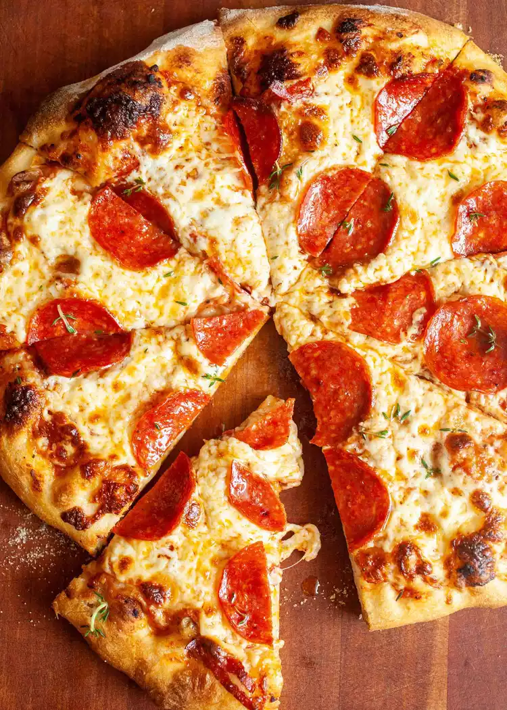

Pizza

I love pizza, so pepperoni pizza is usually a surefire dinner win. But if I'm being honest, I rarely make pizza.
I view pizza as a cheat night for me, and I get delivery.
So when I decided to make pizza at home, I knew it needed to be better than your average delivery.
It needed tons of pepperoni, a nice crust, great flavor.
Ingredients
- 16 ounces pizza dough, store-bought or homemade (I like this no-knead version, though note that this recipe makes enough dough for 2 pizzas)
- 1/2 cup pizza sauce
- 18 to 20 slices pepperoni
- 12 ounces mozzarella cheese, grated
- 1/2 teaspoon ground black pepper
- 1 teaspoon fresh oregano, optional
- Flour for rolling and shaping dough
Steps
- Preheat the oven to 500°F for 20 mins
- Roll out the dough
- Add the toppings & pizza sauce
- Cook the pizza for 6mins and then rotate then cook again for 6 mins
or until the crust is golden brown and charred in spots
- Slice & serve